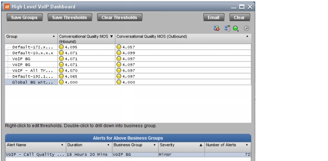

High Level VoIP Dashboard The High Level VoIP Dashboard is useful when you want to quickly find Business Groups with voice or video performance issues within the current Project Time. Figure 5 High Level VoIP Dashboard  The following steps outline the general workflow: 1) Add the Business Groups you want to investigate: drag the groups of interest from another window (for example, a VoIP table). The bottom pane shows all defined (in the Alert Manager) VoIP alert tasks that have triggered alerts for the included groups within the current Project Time. 2) To further investigate, do the following: a) To investigate performance in an individual Business Group, double-click on a group or alert. This opens the group of interest in the High Level VoIP Dashboard by Business Group. b) To investigate overall voice or video call quality between a Business Group and its connected groups, right-click on the Business Group and choose Troubleshoot VoIP Call Quality. Note the following: This insight has a set of associated Business Groups. When you first open this insight, it shows the set of groups that were last saved with the insight. To save a new set of Business Groups, add or remove BGs as desired and then click Save Groups. This insight has a set of Minor, Major, and Critical thresholds for each metric included in the table. To change the thresholds for a specific metric, right-click in the table and choose Edit Thresholds. Click Save Thresholds to save any threshold changes you made. Click Clear Thresholds to revert to the threshold settings that are saved with the insight.